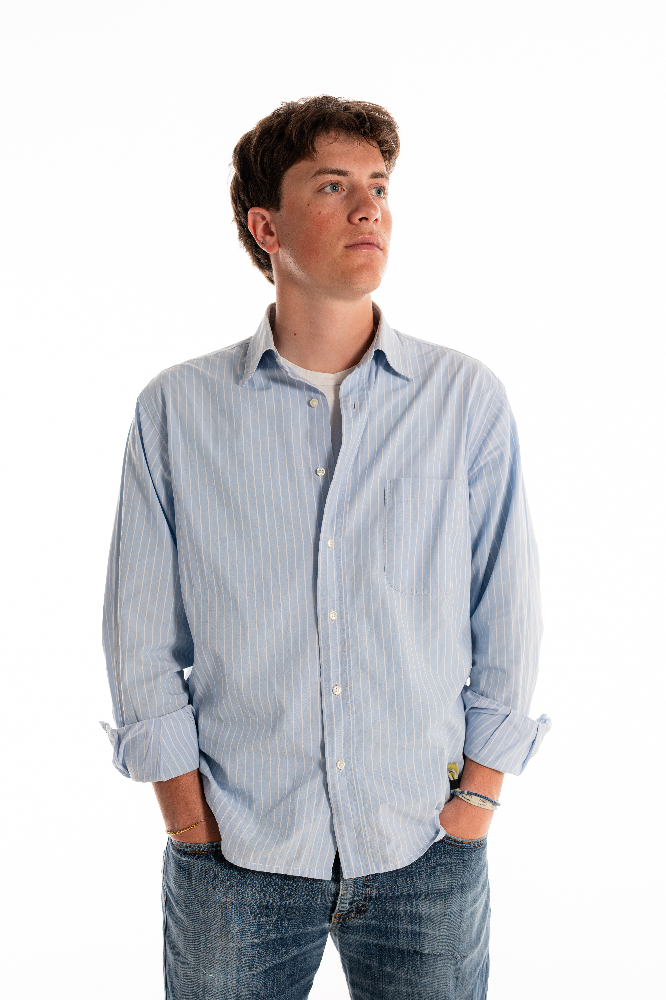

Designer curioso e versatile, unisco una forte attitudine al problem solving allo spirito creativo. Progetto a 360 gradi, spaziando dalla lavorazione del legno agli strumenti digitali come graphic design, modellazione 3D e codice. Team player propositivo, considero il confronto con mentor e professionisti fondamentale per la mia crescita.
Esperienze
- Oggi
Product, Communication Designer & Strategist
Studente al quarto anno di design del prodotto, con un percorso di studi multidisciplinare da comunicazione integrato da corsi in design del prodotto industriale.
- 2026
Esposizione al Fuori Salone
Lampada “Zeta” selezionata per l’esposizione al Fuori Salone 2026 presso la sede di Assolombarda.
- 2025
Tutor per orientamento universitario
Assistente di professore liceale nelle lezioni in preparazione all’università presso la Fondazione Sacro Cuore.
- 2024
Responsabile comunicazione del MuD (Milano University District)
Ideazione e gestione dell’identità visiva e delle strategie online/offline per l’edizione “Cosa rende l’uomo uomo?”.
- 2023
School-work internship, Studio Gumier
Alternanza scuola-lavoro di 150 ore presso lo studio di architettura Gumier in Piazza Cinque Giornate, Milano.
- Dal 2022
Cameriere per servizi catering
Collaborazioni per eventi privati e aziendali: servizio, allestimento e gestione ospiti.
- Dal 2022
Allenatore / educatore
Allenatore di calcio dell’ASD Sacro Cuore, nelle annate Under 19-20 e pulcini.
- 2022
Operatore vinicolo, La Barbatella
Nizza Monferrato (AT). Supporto operativo trasversale per le attività aziendali, vendita del vino, lavoro agricolo in vigna, operazioni di cantina e manutenzione delle strutture.
Formazione
- Laurea triennale in Design della Comunicazione, Politecnico di Milano 2026
- Diploma di maturità, Liceo artistico Sacro Cuore 2023
Competenze
- Adobe Illustrator
- Adobe InDesign
- Adobe Photoshop
- Adobe Premiere Pro
- Figma
- Blender
- Autodesk Fusion
- Autodesk Rhino
- HTML, CSS e JavaScript
- Fotografia
- AI tools
Lingue e interessi
- Italiano Madrelingua
- Inglese B2
- Passioni Architettura, editoria, sport, arte, montagna